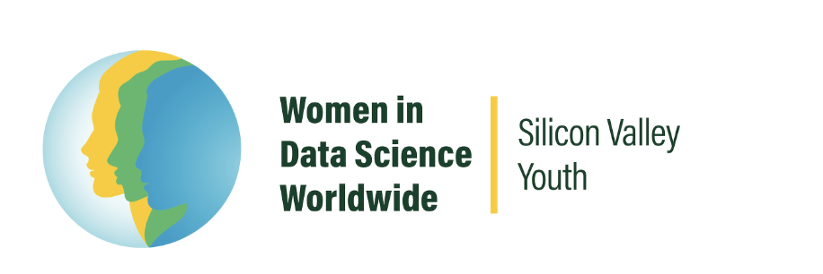

Saturday, January 27,2024
9:00 AM to 6:00 PM
Leadways School
10900 McClellan Place, Cupertino, CA, 95014
United States (map)
WiDS Silicon Valley Youth is independently organized by CP Mentorship
to be part of the mission to increase participation of women in data
science and to feature outstanding women doing outstanding work.

Founded in 2014 in Silicon Valley, 7EDU is an online educational institution dedicated to cultivating the next generation of global citizens through pedagogy, research, and mentorship. We specialize in college admissions counseling and K-12 education solutions. With a team of top-notch academic instructors, professors and counselors, our mission is to provide effective, comprehensive counseling and education services to ensure our students are happy, challenged, and successful.
As a private school in the heart of Silicon Valley, Leadways School adopts an integrated pedagogical model aimed at the holistic development of students. By synergizing experiential learning, academic rigor, and socio-emotional competencies, we aspire to cultivate well-rounded individuals who are socially responsible, ethically guided, and emotionally resilient leader in tomorrow's society. At Leadways School, your child won't just learn; they will thrive, innovate, and contribute meaningfully to society.